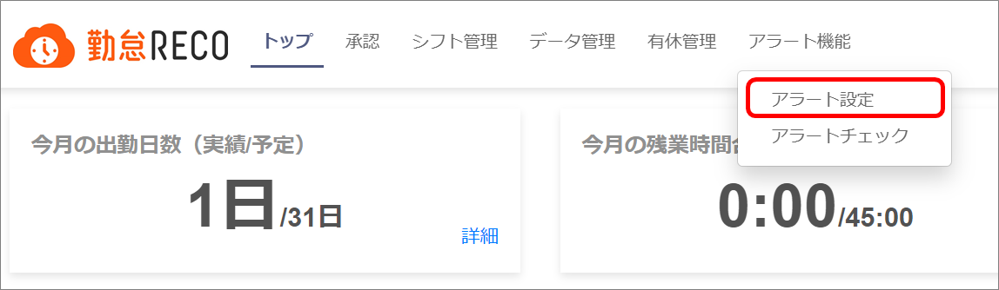
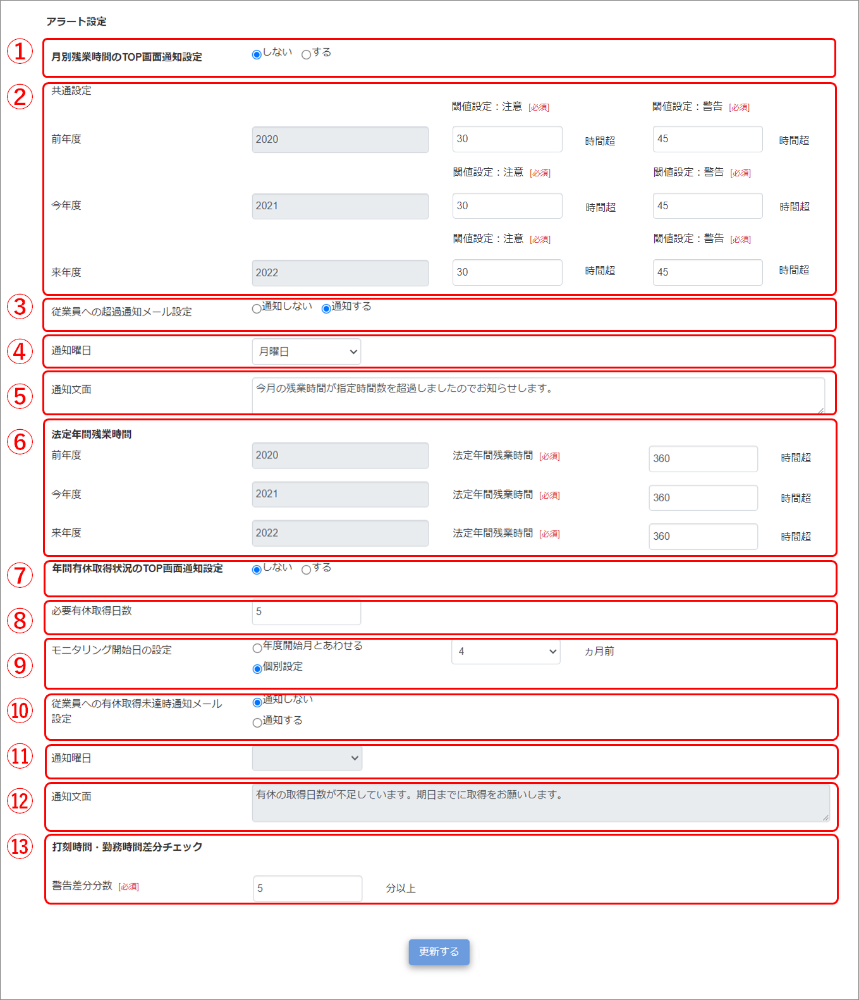
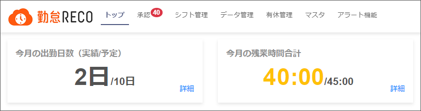
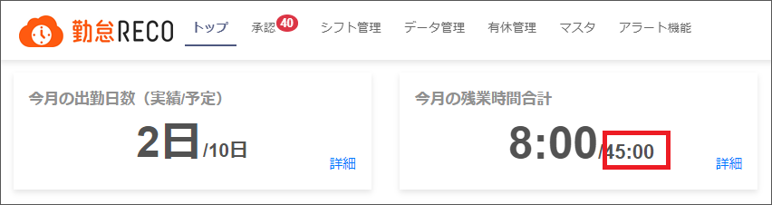
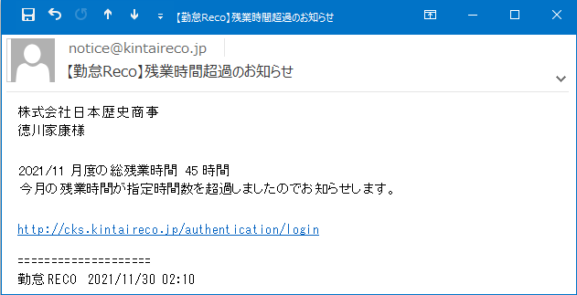
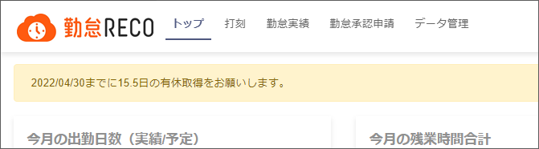
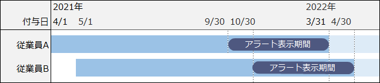
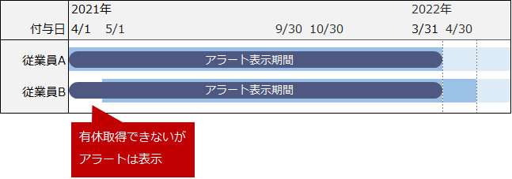
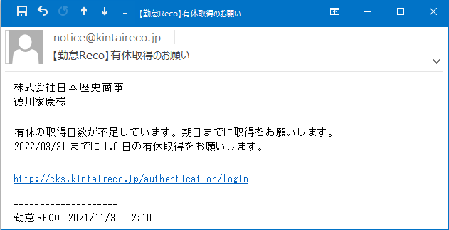

アラート機能の設定
月間残業時間や有休取得状況のモニタリングを行い、管理者へのアラート表示、および従業員への超過通知メール送信有無を設定します。
法定年間残業時間の設定、打刻時間と勤務時間の差分アラート設定も行えます。
ご注意 |
アラート機能を操作できるのは、人事担当者アカウント、システム管理者アカウントです。 |
|---|
 勤怠RECO［管理用］操作マニュアル
勤怠RECO［管理用］操作マニュアル
勤怠RECO［管理用］
操作マニュアル
月間残業時間や有休取得状況のモニタリングを行い、管理者へのアラート表示、および従業員への超過通知メール送信有無を設定します。
法定年間残業時間の設定、打刻時間と勤務時間の差分アラート設定も行えます。
ご注意 |
アラート機能を操作できるのは、人事担当者アカウント、システム管理者アカウントです。 |
|---|
［アラート機能］をクリックし、［アラート設定］をクリックする

「アラート設定」画面が表示されます。
各項目を入力する

月別残業時間のTOP画面通知設定
毎月の残業時間のTOP画面通知有無を設定します。
「する」に設定した場合、残業時間が注意閾値を超過すると黄色、警告閾値を超過すると赤色で表示されます。

共通設定
前年度、今年度、来年度の月間残業時間の注意閾値と警告閾値を設定します。
警告閾値には法定月残業時間を設定します。
設定した警告閾値は、トップ画面の「今月の残業時間」の上限に表示されます。

従業員への超過通知メール設定
月間残業時間の警告閾値を超過した場合に、該当従業員およびその勤怠承認者へメール通知を行うかどうかを設定します。
勤怠承認者は通知メールのCCに設定されてメール通知されます。
※「固定承認者コード」で設定された承認者が勤怠承認者になります。「固定承認者コード」が設定されていない場合は、「初期プロジェクト」の承認者が勤怠承認者になります。

通知曜日
従業員への残業超過通知メールを送信する曜日を設定します。
通知文面
従業員への残業超過通知メールに表示する文面を設定します。
法定年間残業時間
前年度、今年度、来年度の法定年間残業時間を設定します。
年間有休取得状況のTOP画面通知設定
年間の有休取得日数のTOP画面通知有無を設定します。
「する」に設定すると、設定した通知曜日に、年間の有休取得日数のチェックを行います。チェックの結果、「必要有休取得日数」に達していない場合は、トップ画面に注意メッセージを表示します。

ヒント |
モニタリング対象となる従業員は、「モニタリング開始日」の対象範囲に、1回の付与で10日以上の有給休暇を支給された従業員となります。 |
|---|
必要有休取得日数
年間の必要有休取得日数を設定します。
モニタリング開始日の設定
「10日以上の有給休暇」を支給された日から1年後を有休取得期日として、有休取得期日の何カ月前からアラートを表示するかを設定します。
【例】
従業員Aに「2021/4/1」、従業員Bに「2021/5/1」に有休を10日付与した場合
■モニタリング開始日を「個別設定：6ヵ月前」に設定
従業員Aは取得期日「2022/03/31」の6ヵ月前の「2021/9/30」よりアラートを表示。
従業員Bは取得期日「2022/04/30」の6ヵ月前の「2021/10/30」よりアラートを表示。

■モニタリング開始日を「年度開始月とあわせる」に設定
従業員A、従業員Bともに、年度開始月から常にアラートを表示。

従業員への有休取得未達時通知メール設定
「必要有休取得日数」に達していない場合に、該当従業員およびその勤怠承認者へメール通知を行うかどうかを設定します。
勤怠承認者は通知メールのCCに設定されてメール通知されます。
※「固定承認者コード」で設定された承認者が勤怠承認者になります。「固定承認者コード」が設定されていない場合は、「初期プロジェクト」の承認者が勤怠承認者になります。

通知曜日
従業員への有休取得未達通知メールを送信する曜日を設定します。
通知文面
従業員への有休取得未達通知メールに表示する文面を設定します。
打刻時間・勤務時間差分チェック
「打刻時間・勤務時間差分チェック」の警告差分分数の初期値を設定します。
差分チェックでは、勤務開始時刻より「警告差分分数」以上に早く出勤打刻した回数、および勤務終了時刻より「警告差分分数」以上に遅く退勤打刻した回数が表示されます。
［更新する］ボタンをクリックする
画面上部に「更新が完了しました。」とメッセージが表示され、入力したアラート設定が登録されます。